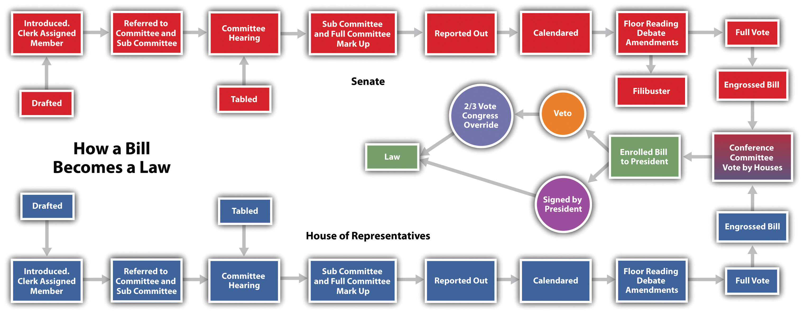
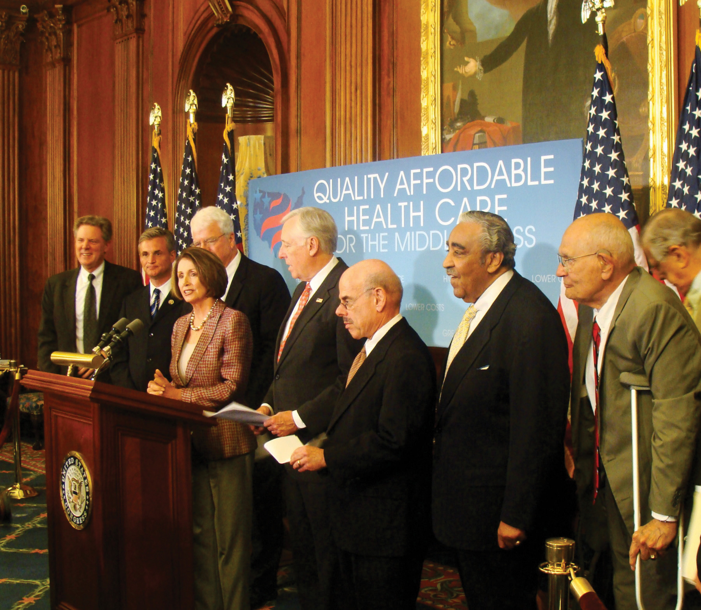
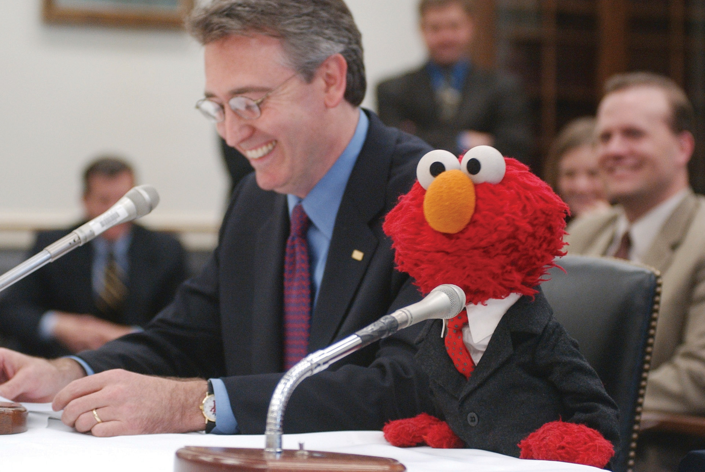
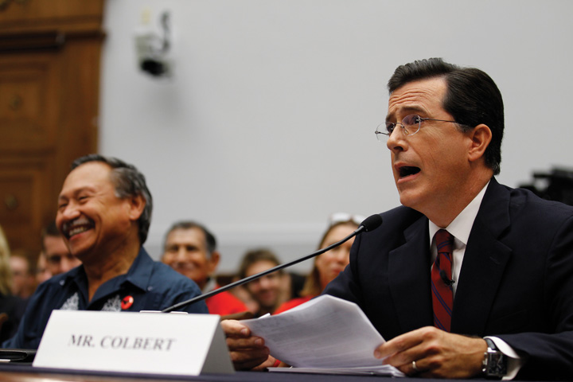
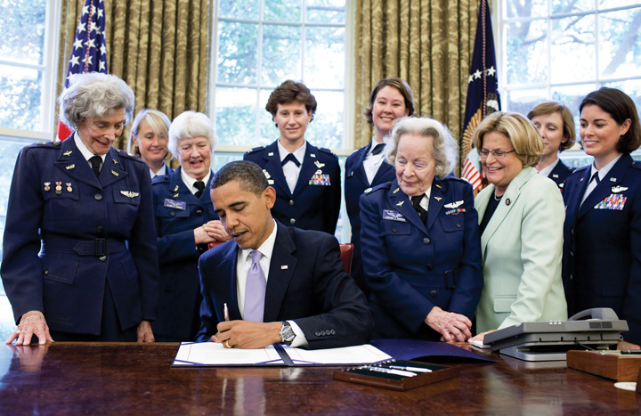

After reading this section, you should be able to answer the following questions:
The primary responsibility of Congress is making laws. Lawmaking is no easy task. Political scientists have characterized Congress as “a procedural obstacle course that favors opponents of legislation and hinders proponents.”“Structure and Powers of Congress,” in Congress A to Z, ed. David R. Tarr and Ann O’Connor, 4th ed. (Washington, DC: CQ Press), 428. It often takes years before a bill is passed. Only a small number of bills that are introduced, formally proposed by members of the House and Senate, become law. On average, close to eleven thousand bills are introduced in the House and Senate during a two-year legislative session and fewer than four hundred become laws.John V. Sullivan, How Our Laws Are Made, research report (Washington, DC: Thomas Online, 2008), accessed May 21, 2011, http://thomas.loc.gov/home/lawsmade.bysec/foreword.html.
The process of making laws involves complex written rules and procedures, some of which date back to 1797, when Vice President Thomas Jefferson prepared a rule book to help him carry out his responsibilities as president of the Senate. Jefferson’s ManualThe rule book developed by Vice President Thomas Jefferson in 1799 to help carry out his responsibilities as president of the Senate that also was adopted by the House. was adopted by the House and remains the authoritative statement of rules except where it has been superseded by provisions passed by members. In addition, there are fifteen volumes of parliamentary procedures and supplementary manuals of notes specifying current rules that pertain to lawmaking in the House. Similar reams of codes exist in the Senate.Charles W. Johnson, How Our Laws Are Made (Washington, DC: US Government Printing Office, January 31, 2000).
The textbook legislative process begins when a member of the House or Senate introduces a bill, which then is referred to appropriate committees within each body. Committees decide whether or not a bill is recommended for floor action, where it will be debated and voted on. The House and Senate must pass identical versions of a bill before it can be sent to the president to be signed into law.
Figure 12.13 How a Bill Becomes a Law
Source: Adapted from http://www.cybertelecom.org/images/howlaw.gif.
Few bills are passed via the organized, step-by-step, textbook process. Since the 1970s, “unorthodox lawmaking” has become the norm. Most bills wend their way through a circuitous path filled with political and procedural roadblocks.Barbara Sinclair, Unorthodox Lawmaking (Washington, DC: Congressional Quarterly Press, 1997). Individual members, especially those seeking reelection, weigh in on bills, resulting in an often contentious atmosphere for lawmaking.
Members develop ideas for legislation from myriad sources. Most often, proposals stem from campaign promises and issues germane to members’ districts brought to their attention by constituents and lobbying groups.John V. Sullivan, How Our Laws Are Made, research report (Washington, DC: Thomas Online, 2008), accessed May 21, 2011, http://thomas.loc.gov/home/lawsmade.bysec/foreword.html. Senator Warren Magnuson (D-WA) initiated a spate of legislation that led to the establishment of the Consumer Product Safety Commission in the 1970s after being shown an X ray of shrapnel embedded in a constituent’s skull resulting from an accident involving a power lawn mower.Eric Redman, The Dance of Legislation (Seattle, WA: University of Washington Press, 2001). Political parties may encourage members to develop legislative initiatives that support their agendas. Members may see a need to revise or repeal an existing law. They also can be motivated by personal experiences. The late Senator Strom Thurmond (R-SC), in an action that contradicted his fierce opposition to government regulation, sponsored a bill requiring warnings about the dangers of alcohol in all advertising after his daughter was killed by a drunk driver.Roger H. Davidson and Walter J. Oleszek, Congress and Its Members, 8th ed. (Washington, DC: CQ Press, 2002). National emergencies can prompt members to take action. Congress enacted the Homeland Security Act of 2002 in the aftermath of the 9/11 terrorist attacks on America. This act created the Department of Homeland Security, a new government agency for emergency preparedness.
Legislation can originate as a result of executive communicationA message from the president, a Cabinet member, or an agency head to the Speaker of the House or president of the Senate recommending that Congress address a policy or budgetary issue., a message or letter from the president, a cabinet member, or an agency head to the Speaker of the House or president of the Senate recommending that Congress address a policy or budgetary issue. These requests often follow the president’s State of the Union address. Presidents also can make their agendas known to Congress by making speeches that are publicized through the media. Executive communications are referred to appropriate congressional committees, which decide whether or not to act on them. The president uses an executive communication to submit his proposed budget to the House Committee on Appropriations, which uses it as a basis for drafting federal funding legislation.Charles W. Johnson, How Our Laws Are Made (Washington, DC: US Government Printing Office, January 31, 2000).
Every year, the docketThe schedule outlining the congressional workload.—the schedule outlining Congress’s workload—accommodates a significant amount of legislation that is required to keep existing programs and services going. Most required legislation takes the form of authorization billsBills that establish the level of funding for a program., which establish a suggested level of funding for a program, and appropriations billsBills that provide the funding for a department or agency program., which actually provide the money for a department or agency to run the program.Lawrence D. Longley and Walter J. Oleszek, Bicameral Politics (New Haven, CT: Yale University Press, 1989).
If it is to have much chance of becoming law, a bill must be drafted into a proposal that will generate support in Congress as well as among the public, interest groups, and the executive branch. Bills are drafted by members with the assistance of their staffs and experts in the House and Senate legislative counsel offices.
A bill’s language can be instrumental in generating media publicity and subsequently support for or opposition to it. The title can position the bill in the public debate, as it captures the ideas and images proponents wish to convey. Megan’s Law, which requires communities to publicize the whereabouts of convicted sex offenders, is named after Megan Kanka, a New Jersey girl who was murdered by a sex offender after his release from prison. Politically charged shorthand often is used to characterize bills. The health-care reform legislation passed by Congress and signed into law by President Barack Obama in 2010 has been labeled “Obamacare” by opponents seeking to repeal the legislation.
Members from either the House or Senate can introduce legislation. The member who introduces a bill is its sponsorThe member of Congress who introduces a bill.. Other members can sign on as cosponsors, or supporters, of the bill. Having a large number of cosponsors or having congressional leaders sign onto a bill can boost its chances of success.
Bills are the most typical form of legislation. They can originate in either the House or Senate, with the exception of bills for raising revenue, which must be initiated in the House.John V. Sullivan, How Our Laws Are Made, research report (Washington, DC: Thomas Online, 2008), accessed May 21, 2011, http://thomas.loc.gov/home/lawsmade.bysec/foreword.html. The same bill must pass through all the formal procedural hurdles in the House and Senate before it can be sent to the president to be signed into law.
Figure 12.14
Members of the House or Senate introduce bills and open the floor to debate.
Source: Photo courtesy of Leader Nancy Pelosi, http://www.flickr.com/photos/speakerpelosi/3721370691/.
After a bill is introduced, it is referred to the standing committee having jurisdiction over its subject matter, such as energy or homeland security, by the presiding officers in each chamber. Having a bill referred to a friendly committee is a key to its potential for success. In the House, but not the Senate, a bill may be considered by more than one committee.John V. Sullivan, How Our Laws Are Made, research report (Washington, DC: Thomas Online, 2008), accessed May 21, 2011, http://thomas.loc.gov/home/lawsmade.bysec/foreword.html. Committees in both chambers frequently pass a bill on to a subcommittee that deals with a specialized area of policy contained in the legislation. As more people work on a bill, the less likely it is they will reach consensus and that the bill will move beyond the committee stage.Barbara Sinclair, Unorthodox Lawmaking (Washington, DC: Congressional Quarterly Press, 1997).
Figure 12.15
Sesame Street’s Elmo testified in front of the House Education Appropriations Subcommittee in 2002 in support of funding for school music programs.
Source: Used with permission from Getty Images.
Committees sometimes request input about a bill from government departments and agencies and hold public hearings where expert witnesses testify. When members seek media coverage of committee hearings, they sometimes will bring in celebrities as witnesses. In 2010, comedian Stephen Colbert testified in front of the House Judiciary Committee in order to bring attention to immigration reform and treatment of farm workers. The performance received mixed reviews from both members of Congress and political commentators.
The full committee votes to determine if the bill will be reported, meaning it will be sent to the floor for debate. If the vote is successful, the committee holds a mark-upProcess of revising a bill. session to revise the bill. The committee prepares a report documenting why it supports the bill. The report is sent to the whole chamber, and the bill is placed on the calendar to await floor debate.
In the House, bills must go the Rules CommitteeThe committee that sets the procedure under which bills will be considered on the House floor. before reaching the floor. The Rules Committee assigns a bill a rule that sets the procedures under which the bill will be considered on the floor. The rule establishes the parameters of debate and specifies if amendmentsProposed changes to a bill., proposed changes to the bill, will be permitted or not. A bill can become stalled if the Rules Committee does not assign it a rule at all or in a timely manner. Rules must be approved by a majority of the members of the House before floor action can begin. There is no Rules Committee in the Senate, where the process of bringing a bill to the floor is simpler and less formal. The Senate majority leader makes a motion to proceed with floor debate.
Figure 12.16
Stephen Colbert’s highly publicized testimony before Congress on behalf of immigration reform was both praised and criticized.
Source: Used with permission from AP Photo/Alex Brandon.
Once a bill reaches the House or Senate floor, it is debated, amended, and voted on. Many of the bills that make it to the floor are minor bills—noncontroversial measures that have symbolic value, such as naming a post office.Brent Kendall, “Capitol Hill’s Odd Bills,” The American Observer, April 17, 2002. Floor consideration of most minor bills is brief, and they are approved by voice vote. Major bills focusing on divisive issues, such as budgetary proposals, health care, and national security, will prompt lengthy debate and amendment proposals before coming to a vote. A bill dies if either chamber fails to pass it.
In the House, bills are considered by the full House meeting in the chamber, which is referred to as the Committee of the WholeThe entire House when it meets to consider a bill.. The Speaker of the House chooses a chairperson to oversee floor action. Speakers for and against the bill have an equal amount of time. A general debate of the bill is followed by debate of amendments. A quorum of 218 members is required for a vote on the bill. Yeas and nays are recorded using a computerized system.
Senate floor action is less structured and more unpredictable than the House procedure. Senators are free to speak as long as they like. The filibusterExtended debate in the Senate that blocks or delays the passage of legislation. can be used by skillful senators to defeat a bill by “talking it to death.” To avoid lengthy and unproductive floor sessions, the Senate can employ unanimous consent agreementsNegotiated agreements that set time limits on debate in the Senate., negotiated agreements that set time limitations on debate.Roger H. Davidson and Walter J. Oleszek, Congress and Its Members, 8th ed. (Washington, DC: CQ Press, 2002). Debate also can be restricted if three-fifths of the senators vote to invoke clotureA motion to limit consideration of a bill and close debate., a motion to limit consideration of a bill. Getting sixty senators to agree to close debate is not easy, especially on controversial issues. Senators vote on the bill using a traditional call of the roll, with each voice vote recorded manually.
If House and Senate versions of a bill are not the same, a conference committeeA committee that works out differences between House and Senate versions of a bill. is formed to work out the differences. Conference committees consist of members of both houses. In 1934, Senator George Norris (R-NE) characterized conference committees as the “third house of Congress” because of the power they wield in the legislative process.David J. Vogler, The Third House (Evanston, IL: Northwestern University Press, 1971). They are the last places in which big changes in legislation can be made. Major changes in the provisions and language of bills are negotiated in conference committees. Up to 80 percent of important bills during a session of Congress end up in conference committees.Stephen D. Van Beek, Post-Passage Politics (Pittsburgh, PA: University of Pittsburgh Press, 1995).
During conference committee negotiations, conferees meet informally with party leaders and members who have an interest in the bill. Representatives of the executive branch work with conferees to devise a final bill that the president will be likely to sign. Once an agreement has been reached, the conference committee issues a report that must be passed by the House and Senate before the bill moves forward to be signed into law by the president.Lawrence D. Longley and Walter J. Oleszek, Bicameral Politics (New Haven, CT: Yale University Press, 1989), 6.
Figure 12.17
After passing through both houses of Congress, a bill does not become a law until it is signed by the president.
Source: Photo courtesy of Pete Souza, http://commons.wikimedia.org/wiki/File:WASP_Congressional_Gold_Medal.jpg.
A bill becomes law when it is signed by the president. A president can vetoThe president’s power to reject a bill by not signing it into law., or reject, a bill by sending it back to Congress with a memorandum indicating his objections. Congress can override a veto with a two-thirds vote in each chamber, enabling the bill to become a law over the president’s objections.Roger H. Davidson and Walter J. Oleszek, Congress and Its Members, 8th ed. (Washington, DC: CQ Press, 2002).
One of the most arduous tasks faced by Congress is passing legislation authorizing the nation’s annual budget. House and Senate members, their staffs, and congressional committees in conjunction with the president and the executive branch are responsible for preparing the budget. The president submits a detailed budget proposal to Congress, which serves as a starting point. The House and Senate Budget Committees hold hearings on the budget to get advice about how funds should be spent.
The nonpartisan Congressional Budget OfficeProvides expert budgetary advice to Congress. (CBO) with a staff of over 230 economists and policy analysts, provides expert budgetary advice to Congress. It reviews the president’s budget plan, projects the actual costs of budget items, and develops options for changes in taxing and spending. CBO staffers prepare detailed reports on the budget and testify before Congress.“CBO’s Role in the Budget Office” (Washington, DC: Congressional Budget Office, 2005), accessed February 16, 2011, http://www.cbo.gov/visitorsgallery/budgetprocess.shtml.
A two-step authorization and appropriations process is required to establish and fund specific programs within the guidelines set by the annual budget. Congress must first pass laws authorizing or recommending that federal programs receive funding at a particular level. The appropriations process, where funds are actually allocated to programs for spending, is the second step. The House Appropriations Committee initiates all bills to fund programs, and its counterpart in the Senate must approve funding bills. The budget resolution that ultimately passes the House and Senate Budget Committees is usually markedly different from the president’s budget proposal.
The budget process rarely goes smoothly. The process can stall, as was the case in 2011 when the inability of Congress to reach an agreement on the budget threatened to result in a government shutdown. Media coverage highlighting partisan bickering over what to fund and what to cut from the budget added to the drama surrounding the budget process.
Members of the public can follow congressional action live on television. After much debate, televised coverage of floor proceedings via the Cable Satellite Public Affairs Network (C-SPAN) was established in the House in 1979 and in the Senate in 1986. C-SPANThe cable network that provides gavel-to-gavel coverage of congressional floor proceedings, committee hearings, and special events. transmits gavel-to-gavel coverage of floor action. It covers committee hearings and broadcasts educational panels and events.
C-SPAN affirmed Congress as a media-conscious institution.Timothy E. Cook, Making Laws & Making News (Washington, DC: Brookings, 1989). A top Rules Committee staffer explained that Congress had tired of losing the battle with the president for media attention: “President Richard Nixon was dominating the airwaves with defenses of his Vietnam War policies, while Congressional opponents were not being given equal access by the networks.”Walter J. Oleszek, “The Internet and Congressional Decisionmaking,” report prepared for the Chairman of the House Rules Committee, September 19, 2001.
C-SPAN’s cameras show Congress at its best and worst, at its most dramatic and most mundane. They showcase members’ elegant floor speeches and capture them joking and looking bored during hearings. C-SPAN is monitored continuously in most congressional offices and is a source of information and images for other mass media.
C-SPAN has expanded its operation beyond cable television and provides extensive radio and online coverage of Congress, the White House, and national politics. In addition to live streams of television and radio feeds from Capitol Hill, the C-SPAN website includes news stories, opinion pieces, history, educational materials, and event coverage.
C-SPAN’s Channel on YouTube
People can follow C-SPAN via Twitter, Facebook, and Foursquare. C-SPAN has its own YouTube channel that hosts an extensive political video library.
C-SPAN Bus
The C-SPAN bus travels the country, providing information about public affairs to communities and gathering local stories that they publicize online.
C-SPAN has expanded beyond its original television coverage of Congress to provide information about government and politics through a range of media.
Source: Photo courtesy of IowaPolitics.com, http://www.flickr.com/photos/iowapolitics/1094329886/.
Making laws is a complex process guided by volumes of rules and influenced by politics. While many bills are proposed each congressional session, few make it all the way through the process to be signed by the president and made law. Congress is responsible for passing legislation enacting the nation’s annual budget, which is frequently a difficult task. The activities of Congress are reported by C-SPAN, which began as a cable network providing gavel-to-gavel coverage of floor proceedings and has expanded to become an extensive resource for information about government and politics.